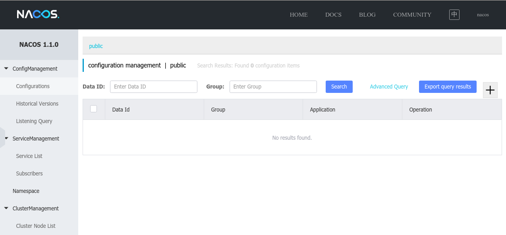
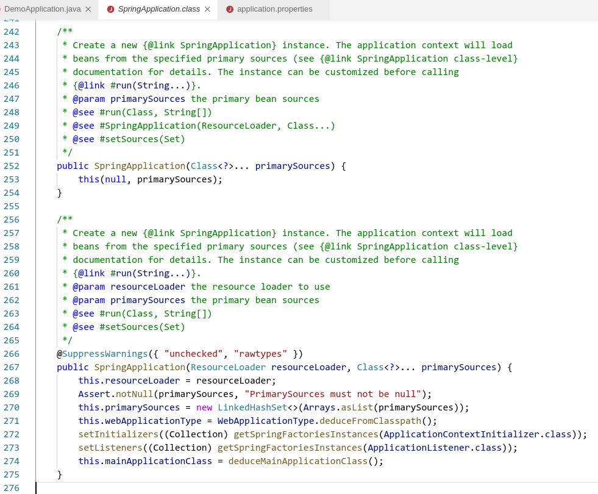

Nacos 与 Eureka 都属于服务注册与发现组件。 其中 Nacos 是阿里开发团队的国产开源产品。
Prerequisites
JDK 1.8
IDE
Tomcat
Nacos
Nacos 下载地址：https://github.com/alibaba/nacos/releases
解压并启动1
2
3tar -xzvf nacos-server-1.1.0.tar.gz
cd nacos/bin
sh startup.sh -m standalone
打开网址 http://localhost:8848/nacos
初次登录会跳转到登录界面，默认用户名和密码都是 nacos
登录成功后会看到如下界面。

打开 VS Code，使用 Spring Initializr 创建一个 Maven 依赖项目，依赖项勾选 Spring Web.
新建两个项目，一个是provider，一个是consumer，均在1
2
3
4
5<dependency>
<groupId>org.springframework.cloud</groupId>
<artifactId>spring-cloud-starter-alibaba-nacos-discovery</artifactId>
<version>0.9.0.RELEASE</version>
</dependency>
配置 application.properties
……
Spring Boot 启动 Eureka Server 和带Eureka Client的微服务
The first one is the server which needs only Eureka Server dependency.
Spring Initializr > Generate a Maven Project > Group: com.ustb > Artifact: service-registration-and-discovery-service > Dependencies: Eureka Server
Then second one(a client) requires both Eureka Server and Eureka Discovery Client dependencies.
打开jar包我们看到，通过在spring.factories中写入1
2org.springframework.boot.autoconfigure.EnableAutoConfiguration=\
org.springframework.cloud.netflix.eureka.server.EurekaServerAutoConfiguration
来对EurekaServerAutoConfiguration类进行装配。
SpringApplication 初始化代码：

开启一个 Eureka 服务注册

简单地使用注解就可以了，另外需要在application.properties中进行配置
与注册中心对话
1 | package com.example.serviceregistrationanddiscoveryclient; |
这里通过注解EnableDiscoveryClient来继承注册微服务的接口
在类中通过注解@RequestMapping(“/service-instances/{applicationName}”) 提供该client的访问接口
提供服务
微服务有两种方法注册到 Eureka 中心，一种是本地启动的Spring Boot程序添加注解 @EnableDiscoveryClient；
第二种是在配置文件中添加 defaultZone: 后加Eureka中心的地址（http://localhost:8761/eureka）
要想从Eureka中心获取可用的微服务，默认的XML方式解析起来比较麻烦。我们可以通过在Eureka里写一个 discoveryClient 的 controller来实现。
配置里写 eureka.client.fetch-registry=true。
但同时又不想 eureka server 自己也被其他服务发现，这时需要配置 eureka.client.register-with-eureka=false
注意：Spring Cloud Gateway 依赖和 Spring Web不能同时添加
源码启动 Eureka Server， Eureka Client 和微服务
1.安装IDEA 2019.2 之后的版本 ； gradle 6.3/6.5 ; Tomcat 8/9
2. 注册码云帐号，然后克隆项目：
1 | git clone https://gitee.com/Shane1501/eureka.git |
IDEA 打开项目切换到 web3 分支
3. 把项目根目录下的 build.gradle.IDEA2019.3 拷贝一份新的改为 build.gradle
1 | cp build.gradle.IDEA2019.3 build.gradle |
（可以选用用阿里云镜像，把下面文件保存成 init.gradle 放到 USER 目录下的 .gradle 文件夹里）1
2
3
4
5
6
7
8
9
10
11
12
13
14
15
16
17
18
19
20
21
22
23
24
25
26
27
28
29
30
31
32
33allprojects{
repositories {
def ALIYUN_REPOSITORY_URL = 'https://maven.aliyun.com/repository/public/'
def ALIYUN_JCENTER_URL = 'https://maven.aliyun.com/repository/jcenter/'
def ALIYUN_GOOGLE_URL = 'https://maven.aliyun.com/repository/google/'
def ALIYUN_GRADLE_PLUGIN_URL = 'https://maven.aliyun.com/repository/gradle-plugin/'
all { ArtifactRepository repo ->
if(repo instanceof MavenArtifactRepository){
def url = repo.url.toString()
if (url.startsWith('https://repo1.maven.org/maven2/')) {
project.logger.lifecycle "Repository ${repo.url} replaced by $ALIYUN_REPOSITORY_URL."
remove repo
}
if (url.startsWith('https://jcenter.bintray.com/')) {
project.logger.lifecycle "Repository ${repo.url} replaced by $ALIYUN_JCENTER_URL."
remove repo
}
if (url.startsWith('https://dl.google.com/dl/android/maven2/')) {
project.logger.lifecycle "Repository ${repo.url} replaced by $ALIYUN_GOOGLE_URL."
remove repo
}
if (url.startsWith('https://plugins.gradle.org/m2/')) {
project.logger.lifecycle "Repository ${repo.url} replaced by $ALIYUN_GRADLE_PLUGIN_URL."
remove repo
}
}
}
maven { url ALIYUN_REPOSITORY_URL }
maven { url ALIYUN_JCENTER_URL }
maven { url ALIYUN_GOOGLE_URL }
maven { url ALIYUN_GRADLE_PLUGIN_URL }
}
}
导入
4. 配置 Tomcat


5. 加快 eureka 启动速度
在Tomcat启动时添加
-Deureka.waitTimeInMsWhenSyncEmpty=0
-Deureka.numberRegistrySyncRetries=0
6. 点击启动Tomcat，会弹出eureka界面

源码编译即告完成。
Eureka 源码解析
服务发现组件 package com.netflix.discovery
v1.1版本
DiscoveryClient.java1
2
3
4
5
6
7
8
9
10
11
12
13
14
15
16/**
* Makes remote calls with the corresponding action(register,renew etc).
*
* @param action
* the action to be performed on eureka server.
*
* Try the fallback servers in case of problems communicating to
* the primary one.
*
* @return ClientResponse the HTTP response object.
* @throws Throwable
* on any error.
*/
private ClientResponse makeRemoteCall(Action action, int serviceUrlIndex) throws Throwable {
......
}
接收端： package com.netflix.eureka;
RemoteRegionRegistry.java1
2
3public RemoteRegionRegistry(String regionName, URL remoteRegionURL) {
......
}
那么，一个 InstanceInfo 实例是如何产生的呢？
com/netflix/eureka/ExampleEurekaService.java1
43 InstanceInfo instanceInfo = new EurekaConfigBasedInstanceInfoProvider(instanceConfig).get();
com/netflix/appinfo/providers/EurekaConfigBasedInstanceInfoProvider.java1
2
3
4
5
6
7
8
9
10
11
12
13
14
15
16
17
18
19
20
21
2284 builder.setNamespace(config.getNamespace())
.setInstanceId(instanceId)
.setAppName(config.getAppname())
.setAppGroupName(config.getAppGroupName())
.setDataCenterInfo(config.getDataCenterInfo())
.setIPAddr(config.getIpAddress())
.setHostName(defaultAddress)
.setPort(config.getNonSecurePort())
.enablePort(PortType.UNSECURE, config.isNonSecurePortEnabled())
.setSecurePort(config.getSecurePort())
.enablePort(PortType.SECURE, config.getSecurePortEnabled())
.setVIPAddress(config.getVirtualHostName())
.setSecureVIPAddress(config.getSecureVirtualHostName())
.setHomePageUrl(config.getHomePageUrlPath(), config.getHomePageUrl())
.setStatusPageUrl(config.getStatusPageUrlPath(), config.getStatusPageUrl())
.setASGName(config.getASGName())
.setHealthCheckUrls(config.getHealthCheckUrlPath(),
config.getHealthCheckUrl(), config.getSecureHealthCheckUrl());
125 instanceInfo = builder.build();
instanceInfo.setLeaseInfo(leaseInfoBuilder.build());
而config的来源则是
com/netflix/eureka/ExampleEurekaService.java1
61 DynamicPropertyFactory configInstance = com.netflix.config.DynamicPropertyFactory.getInstance();
com/netflix/config/DynamicPropertyFactory.java1
2279 initWithConfigurationSource(configFromManager);
280 initializedWithDefaultConfig = !ConfigurationManager.isConfigurationInstalled();
jsp修改后不立即更新，应改为exploded war
报错：1
Artifact Gradle : com.netflix.eureka : eureka-server-1.9.26-SNAPSHOT.war (exploded): Error during artifact deployment. See server log for details.